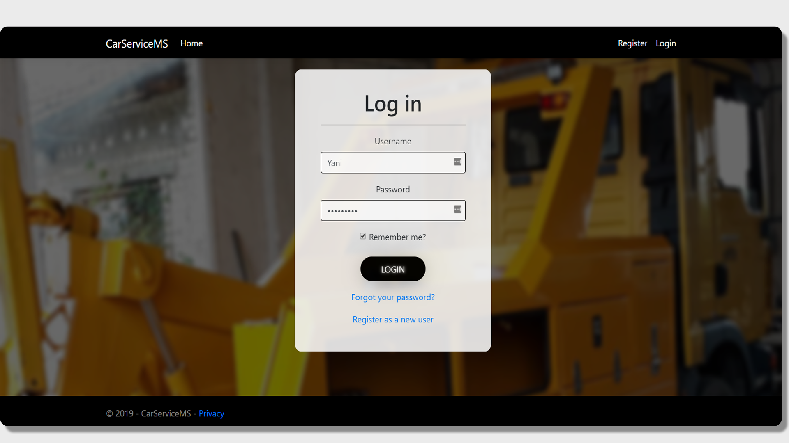

Login


By clicking on some of the books in the table, we can see a detailed information about the book such as: Title, Author, Dewey Call Number, ISBN, Book Status, Location, as well as Checkout History and if the book has Current holds. There are also several features on this page: Check out and Mark item Lost.